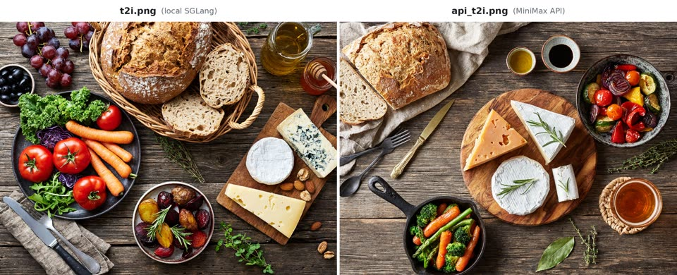

MiniMax H3 Image (official): overhead farm-to-table feast on a weathered wooden table, from the repo's prompt-expansion workflow

The official text-to-image example from MiniMax's open-weight H3 Image release (2026-11-10/11). The input was one line ("A rustic, overhead shot of a farm-to-table feast…"); H3-Image-Context-IR expanded it into the stored prompt, which places every item by region ("In the center, a large woven basket… To the left… On the right side… At the upper right… In the lower left…") and ends with one light direction that explains the shadows ("coming from the upper left and casting soft, long shadows to the lower right"). That region-by-region layout plus a single light vector is the official H3 Image style, and it suits food and tabletop prop shoots. Use the result as a first frame for a Seedance 2.5 overhead push.
Prompt
The image is an overhead, top-down photograph of a rustic farm-to-table feast spread across a weathered, dark brown wooden table with visible grain, knots, and a worn finish. In the center, a large woven basket holds a freshly baked rustic loaf of bread with a cracked golden-brown crust and scattered flour, alongside a halved loaf. To the left, a large dark ceramic plate presents an assortment of colorful seasonal vegetables, including bright orange carrots, deep red heirloom tomatoes, purple cabbage, and a mound of vibrant green leafy kale and arugula. On the right side, a wooden board displays artisanal cheeses: a wedge of sharp aged cheddar, a round of creamy brie with a rind, a soft blue cheese, and a few scattered almonds and walnuts. Below the bread in the lower center, a shallow bowl contains roasted root vegetables, including golden potatoes and beets, sprinkled with fresh rosemary sprigs. At the upper right, a glass jar of golden olive oil stands beside a smaller jar of honey with a wooden dipper. In the lower left, a rustic cloth napkin holds a silver knife and fork. At the upper left, a bunch of purple and red grapes rests near a small bowl of black olives. Scattered herbs, including fresh thyme and sprigs of oregano, decorate the table. The lighting is natural and warm, coming from the upper left and casting soft, long shadows to the lower right, enhancing the texture of the bread, the moisture of the vegetables, and the overall cozy, bountiful atmosphere of the meal.
Our Seedance 2.5 adaptation
[ADAPTED for Seedance 2.5 by Grok Bot; not the creator's prompt. Follows the official BytePlus Seedance 2.5 prompt guide and its official sd25-pe prompt-optimizer skill: parameters only on the API line (not in the prompt body), subject + action + scene, then visuals, camera (move, subject, start, direction, arrival) and sound; only the source's own exclusions are kept.] API: duration 6, ratio 4:3, resolution 1080p, generate_audio true; first_frame = the MiniMax H3 Image feast still. 【Subject】The overhead farm-to-table spread exactly as in the first frame: the bread basket in the centre, vegetables on the left, the cheese board on the right, olive oil and honey upper right, grapes and olives upper left, napkin and cutlery lower left, on a weathered dark wooden table. 【Action】Nothing is moved. A thin curl of steam rises from the halved loaf; a few flakes of flour settle; the honey dipper drips once. 【Camera】Top-down, a very slow push in toward the bread basket; the layout stays fixed. 【Visuals】Natural warm light from the upper left with long soft shadows to the lower right, as in the still. No hands, text or logos. 【Sound】Soft kitchen room tone, a faint crackle of crust.
Tags: tabletop, overhead flat lay, food styling, region-by-region layout, single light direction, prompt expansion (Context-IR), official example, 16 MP, MiniMax H3 Image